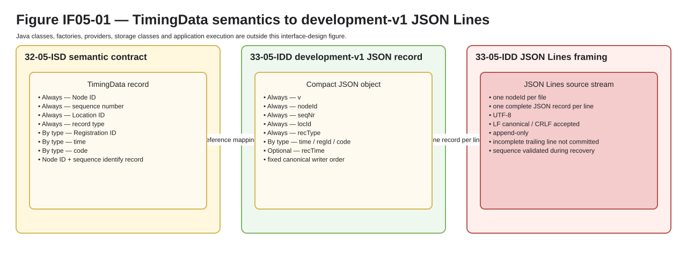

TimingData Interchange Interface Design Description (IDD)¶
Status: draft / development-v1 reference representation
System interface: IF-05 — TimingData Interchange
Implements: 32-05-ISD-timingdata-interchange.md
Purpose¶
This Interface Design Description defines the current default/reference development-v1 representation of IF-05 TimingData.
The ISD owns the normative TimingData semantics and requirements. This IDD describes how that contract is represented as compact JSON records in an append-only JSON Lines file.
This document deliberately does not define Java classes, factories, providers, threads, queues or storage implementation classes.
Design overview¶
The reference design uses:
one compact JSON object per TimingData record;
one complete JSON object per JSON Lines record;
one Node ID source stream per file;
monotonically increasing
seqNr;explicit record type in
recType;compact semantic codes in
code;absolute UTC timestamp text;
per-record integer representation version
v.

Figure IF05-01 — IF-05 semantics mapped to development-v1 JSON and JSON Lines.
Semantic-to-JSON mapping¶
Semantic value |
Presence |
v1 JSON member |
|---|---|---|
representation version |
Always |
|
Node ID |
Always |
|
sequence number |
Always |
|
Location ID |
Always |
|
record type |
Always |
|
time |
By record type |
|
Registration ID |
By record type |
|
code |
By record type |
|
record creation time metadata |
Optional |
|
The stable IF-05 record key (Node ID, sequence number) is represented by
(nodeId, seqNr).
Registration record mapping¶
AUTO_REG¶
Automatic registration add:
recType = AUTO_REG
code = [ADD]
The record type already carries the automatic-registration meaning, so AUTO
is not repeated in code.
Reserved future revoke mapping:
recType = AUTO_REG
code = [REV]
same regId
same time
MAN_REG¶
Manual registration using system-assigned time:
recType = MAN_REG
code = [ADD, AUTO]
Manual registration using operator-entered time:
recType = MAN_REG
code = [ADD, MAN]
Reserved future revoke mappings:
[ADD, AUTO] -> [REV, AUTO]
[ADD, MAN] -> [REV, MAN]
Canonical writer output places the action (ADD or future REV) first.
Array order is not semantic to a reader; the valid code combination is.
Duplicate, contradictory or unknown codes for a known record type are invalid.
A future revoke record repeats the original regId and time, receives a
new seqNr and recTime, and never rewrites the original record.
Development-v1 record matrix¶
Record type |
Current add code |
Required registration data |
Reserved future revoke code |
|---|---|---|---|
|
|
|
|
|
|
|
|
Development-v1 JSON contract¶
Known members use the following JSON types and validation rules.
Member |
JSON type |
Presence |
v1 design rule |
|---|---|---|---|
|
integer |
Always |
exactly |
|
string |
Always |
non-empty Node ID |
|
integer |
Always |
|
|
integer |
Always |
positive Location ID representation |
|
string |
Always |
identifies the concrete v1 record type |
|
string |
By record type |
required for |
|
string |
By record type |
required for |
|
array of strings |
By record type |
required for |
|
string |
Optional |
canonical record-creation time metadata when emitted |
Canonical writer member order:
v
nodeId
seqNr
locId
recType
time
regId
code
recTime # when present
Validation rules:
every
Alwaysmember is present and non-null;every
By record typemember required by the selectedrecTypeis present and non-null;Optionalmembers such asrecTimemay be omitted;nodeIdis not normalized, case-folded or derived by the reference reader/writer;AUTO_REGcurrently accepts exactly["ADD"];MAN_REGcurrently acceptsADDplus exactly one ofAUTOorMAN;readers may accept a valid
codecombination in another array order;canonical writer output always emits action first;
seqNrremains authoritative source order; no chronological ordering is inferred fromtimeorrecTime.
Timestamp encoding¶
Canonical development-v1 timestamp text for registration time, and for
optional recTime when present, is:
YYYY-MM-DDTHH:mm:ss[.fraction]Z
Rules:
literal
Zrepresents UTC;fractional seconds are optional and contain 1 to 9 digits when present;
canonical writer output omits the fractional part for a whole second;
unnecessary trailing fractional zeroes are removed;
offsets such as
+02:00, implicit local time and timezone names are not canonical v1 values.
Examples:
2026-10-01T12:00:00Z
2026-10-02T10:57:43.444Z
2026-10-02T10:57:43.444123789Z
recTime, when present, is optional record-creation metadata. It is not a
durable-commit marker and is not part of the common IF-05 record envelope.
JSON Lines file design¶
The default/reference development-v1 file uses UTF-8 JSON Lines (.jsonl) and
contains records from exactly one nodeId source stream.
Rules:
encoding is UTF-8 without BOM;
there is no file header, footer or comment syntax;
vis carried by every record;one complete TimingData JSON object is written per physical line;
all records in one file use the same
nodeId;canonical writer line ending is LF (
0x0A);a reader may accept CRLF (
0x0D 0x0A);a line terminator completes the record boundary;
valid JSON bytes at EOF without LF/CRLF are an incomplete trailing record and are not committed;
blank lines are invalid input;
every complete line is independently JSON-decodable;
canonical writer output is compact single-line JSON;
insignificant JSON whitespace and member ordering are not semantic to readers;
committed records are append-only and are not rewritten;
valid complete records before an incomplete trailing line remain readable;
recovery/import validates Node ID and sequence ordering and reports gaps, duplicates or regressions explicitly.
The exact filename, directory mapping, rotation/retention policy and filesystem
durability primitive are outside IF-05. A different TimingData representation
does not have to use .jsonl.
Reference JSON examples¶
Automatic registration:
{"v":1,"nodeId":"Test","seqNr":1,"locId":24,"recType":"AUTO_REG","time":"2026-10-01T12:00:00Z","regId":"N0001","code":["ADD"],"recTime":"2026-10-02T10:57:43.444Z"}
Manual registration using system-assigned time:
{"v":1,"nodeId":"Test","seqNr":2,"locId":24,"recType":"MAN_REG","time":"2026-10-01T12:00:05Z","regId":"N0002","code":["ADD","AUTO"],"recTime":"2026-10-02T10:57:45.1Z"}
Manual registration using operator-entered time:
{"v":1,"nodeId":"Test","seqNr":3,"locId":24,"recType":"MAN_REG","time":"2026-10-01T11:59:58.25Z","regId":"N0003","code":["ADD","MAN"],"recTime":"2026-10-02T10:57:46Z"}
Reserved future revoke examples:
{"v":1,"nodeId":"Test","seqNr":4,"locId":24,"recType":"AUTO_REG","time":"2026-10-01T12:00:00Z","regId":"N0001","code":["REV"],"recTime":"2026-10-02T11:05:12.123Z"}
{"v":1,"nodeId":"Test","seqNr":5,"locId":24,"recType":"MAN_REG","time":"2026-10-01T11:59:58.25Z","regId":"N0003","code":["REV","MAN"],"recTime":"2026-10-02T11:05:14Z"}
The Registration IDs above are synthetic test/example data. Four numeric digits are used so examples remain convenient for later test sets containing up to 2000 teams; IF-05 does not impose that display convention on Registration ID.
Compatibility and versioning design¶
Development v1 includes explicit per-record representation versioning through
an integer v member and uses the odd/even maturity convention below. Both are
design choices of this reference representation, not additional IF-05
requirements.
The default/reference representation uses integer format versions:
odd values are development/unstable formats;
even values are released/stable formats;
current working format:
v = 1;first frozen/released contract: expected
v = 2;later incompatible development work starts at
v = 3, then may freeze asv = 4;decimal/minor versions such as
1.1are not used.
Within one supported baseline:
a canonical writer emits only members defined by the version it implements;
a reader tolerates additional JSON members when all required known fields remain valid;
an unknown
recTypein an otherwise supported version is retained/reported as unsupported rather than reinterpreted as a known type;malformed JSON, missing required fields, invalid field types/values, invalid
codecombinations and sequence violations are explicit invalid-record conditions;an unsupported integer
vis an explicit semantic-decoding compatibility failure;raw unsupported lines may be retained/exported but are not interpreted using another version’s semantics;
compatible additions do not silently change existing member/code meaning.
A stable even-numbered format is not silently redefined. Breaking work starts in the next odd-numbered development format.
ISD requirement realization¶
ISD requirement |
development-v1 design realization |
|---|---|
IF05-REQ-001 |
|
IF05-REQ-002 |
Node ID + |
IF05-REQ-003 |
|
IF05-REQ-004 |
|
IF05-REQ-005 |
registration records carry |
IF05-REQ-006 |
|
IF05-REQ-007 |
JSON Lines persistence is append-only; an existing committed record is not rewritten |
JSON Lines completion rules, unknown-member handling, integer v, the v1
seqNr limit, odd/even version-number convention and optional recTime
are concrete reference-design choices. They are intentionally not additional
IF-05 requirements.